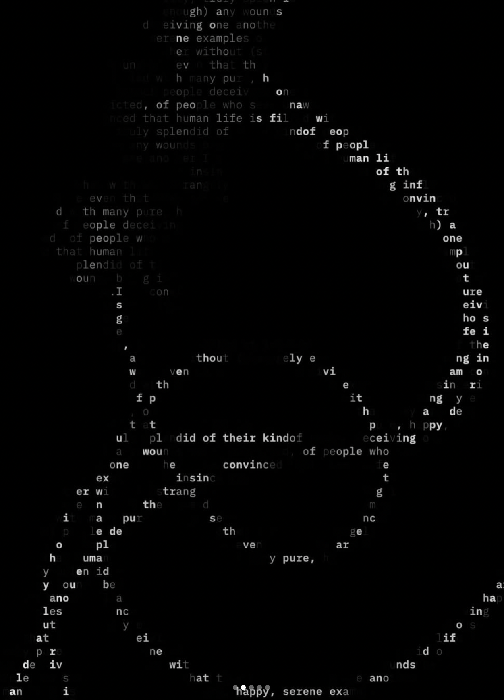
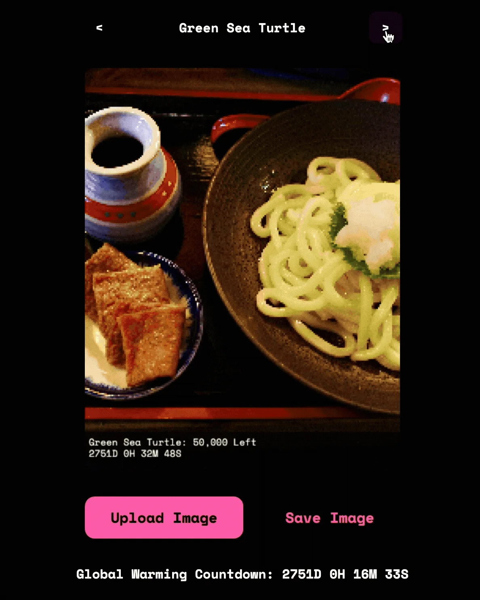
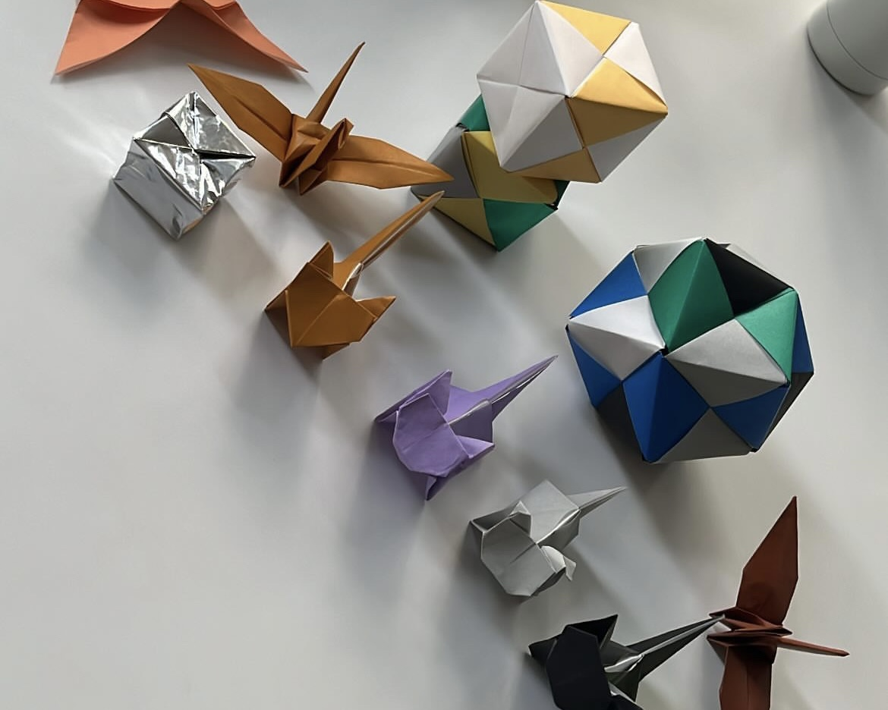
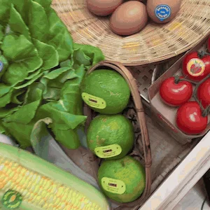
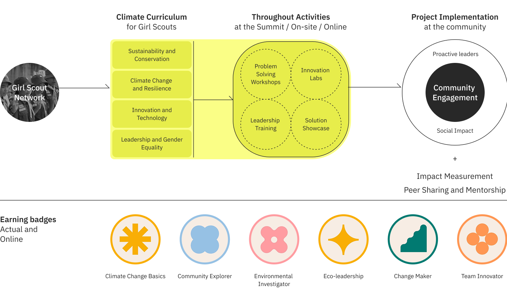
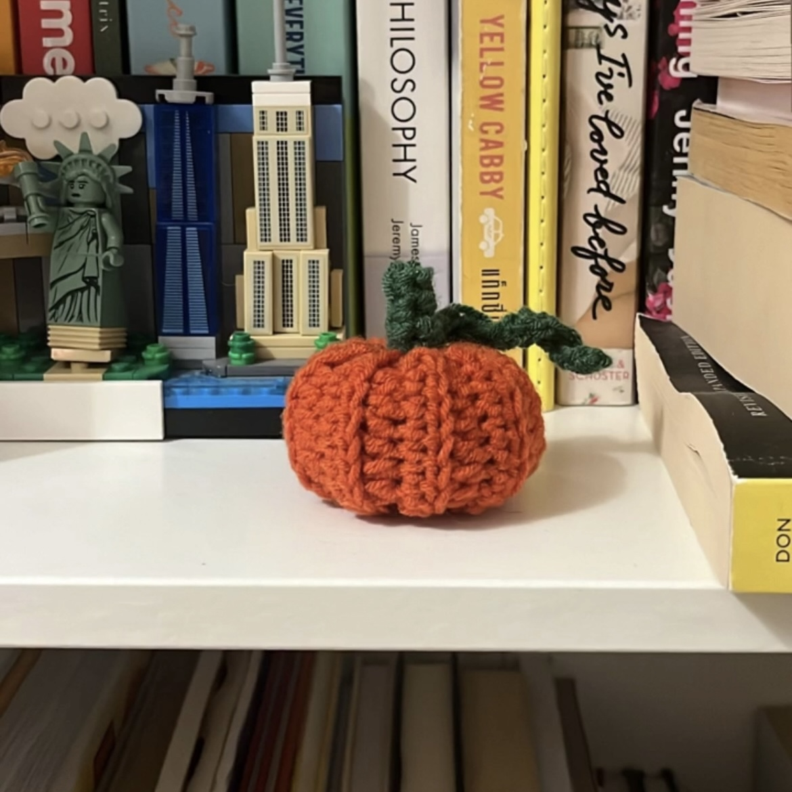
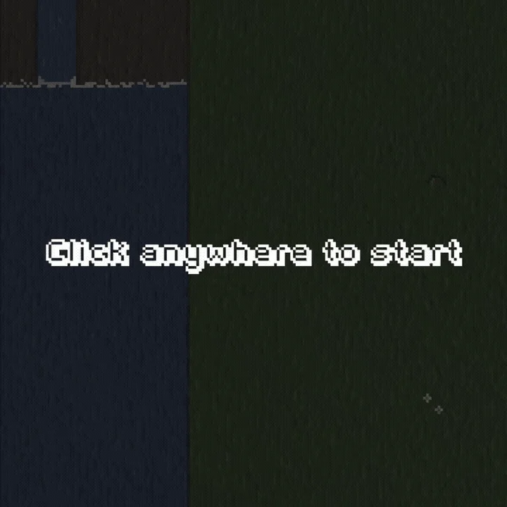
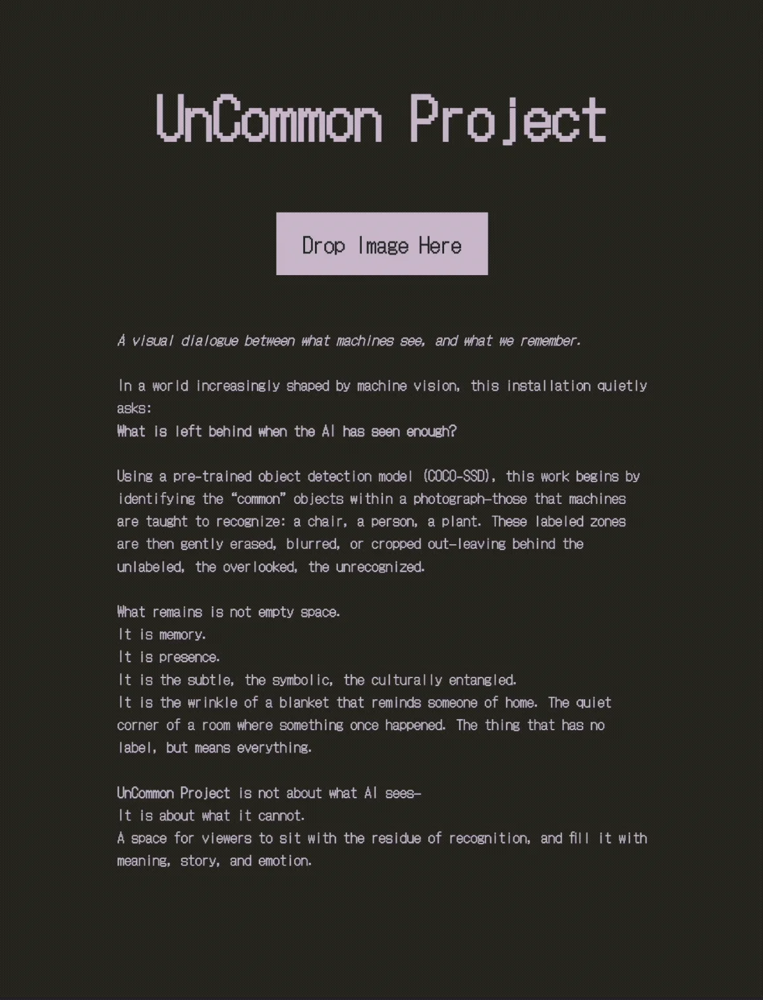
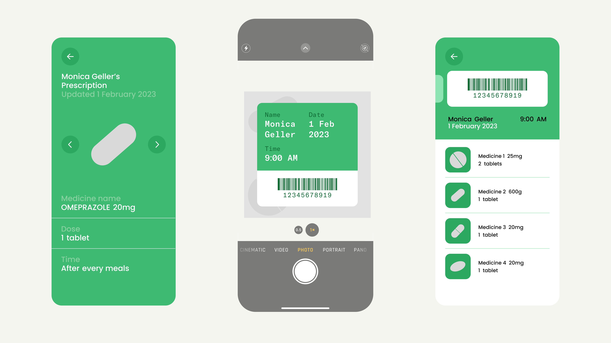
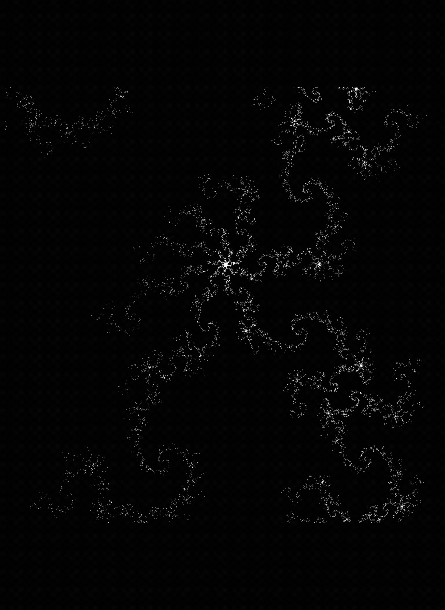

Mundane Project
A little playground between design and code. Exploring Figma Make to turn text prompts into generated imagery with custom typography, somewhere between a visual diary and a tiny creative tool.

Explore the project ↗Red List Camera
What if numbers could make wildlife loss feel a little more real? Inspired by the IUCN Red List, this project explores how visualising endangered species data can help people see the impact of biodiversity loss.

Origami
I've always loved a good puzzle. Origami is my way of slowing down, figuring things out, and turning a single sheet of paper into something unexpected.

AR Spark
Bringing the physical and digital worlds a little closer. Exploring 3D meshes and augmented reality to turn tangible products into interactive experiences.

Ecological Girl Scout
Rethinking how young girls learn to care for the planet. Researching and redesigning environmental learning tools for Girl Scouts in Thailand, helping them tackle ecological challenges in their own communities. Awarded first place and presented at UN Women Asia-Pacific in Seoul.

Crochet
Reading patterns, making up new ones, and occasionally figuring things out as I go. A little collection of things that started as ideas in my head and ended up in my hands.

Moodeng
When Figma introduced its updated prototyping tools, I thought, why not make a game? A little experiment turning everyone's favourite Moo Deng into a playable experience.

Uncommon Project
A side quest built on top of Common Project. Teaching AI to recognise everyday objects, then exploring the things it doesn't quite see. A little study of what happens in the gaps between human and machine perception.

Well being for Eldery
How might we execute the service provided to hospitals, clinics, patients, and family members to assist the stakeholders in better medication management and avoid treatment blunders?

Coding
Turning mathematical equations into infinite stars. A self-taught detour into front-end development, learning by making little things and seeing where the code takes me.

Photo
Vacilando is one of my favourite feelings in travelling: wandering without being in a hurry to arrive. I love bringing photographs home, little time capsules of places, fleeting moments, and feelings I'd like to revisit.